|
|
Jump to the page in German language |
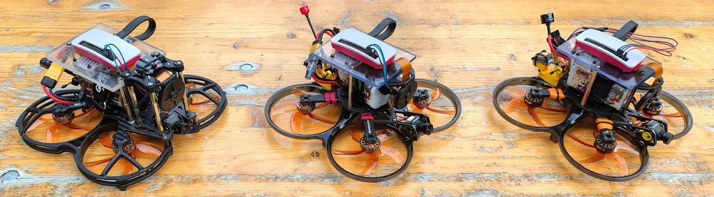
Participants in the project form groups of up to four people. Each group is provided with an AI-capable FPV drone and the necessary components. Their tasks are the development, implementation, investigation, and evaluation of exciting and comprehensible drone AI applications.
| Date | Time | Room | Content |
|---|---|---|---|
| 15.10.2025 | 10:00-13:00 | 2-033 | Introductory session, group formation, requirements analysis, project planning (scheduling) |
| 22.10.2025 | 10:00-13:00 | 2-033 | Group work |
| 29.10.2025 | 10:00-13:00 | 10-MZH, 2-033 | Flight tests in the multipurpose hall, group work in the lab |
| 05.11.2025 | 10:15-13:00 | 10-MZH, [1-022|2-033] | Flight tests in the multipurpose hall, group work in the lab |
| 12.11.2025 | 10:00-13:00 | 10-MZH, 2-033 | Flight tests in the multipurpose hall, group work in the lab |
| 19.11.2025 | 10:00-13:00 | 10-MZH, 2-033 | Flight tests in the multipurpose hall, group work in the lab |
| 26.11.2025 | ----- | ----- | U!REKA Day |
| 03.12.2025 | ----- | ----- | Business trip |
| 10.12.2025 | 10:00-13:00 | 10-MZH, 2-033 | Flight tests in the multipurpose hall, group work in the lab |
| 17.12.2025 | 10:00-13:00 | 10-MZH, 2-033 | Flight tests in the multipurpose hall, group work in the lab |
| 24.12.2025 | ----- | ----- | Christmas holidays |
| 31.12.2025 | ----- | ----- | New Year's Eve |
| 07.01.2026 | 10:00-13:00 | 10-MZH, 2-033 | Flight tests in the multipurpose hall, group work in the lab |
| 14.01.2026 | 10:00-13:00 | 10-MZH, 2-033 | Flight tests in the multipurpose hall, group work in the lab |
| 21.01.2026 | 10:00-13:00 | 10-MZH, 2-033 | Flight tests in the multipurpose hall, group work in the lab |
| 28.01.2026 | 10:00-13:00 | 2-033 | Demonstration and presentation of the project results of all teams, closing session |
| AI Drones: A bilingual handbook on the design, construction, and use of AI-capable drones for scientific projects and teaching (version: 16.11.2025) | ||
| Project description | ||
| Project description |
Each team receives the following equipment:
The prepared drones are described in detail below...
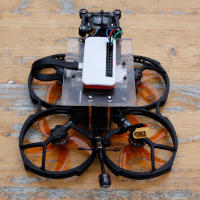
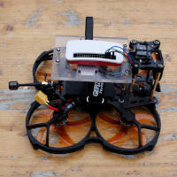

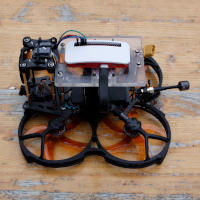
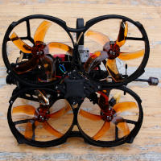
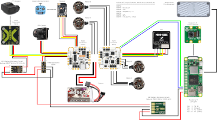
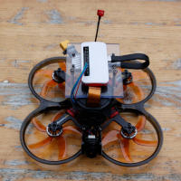
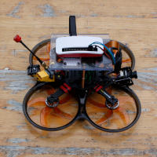
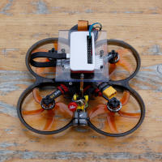
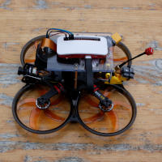
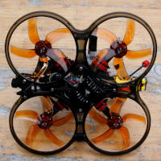
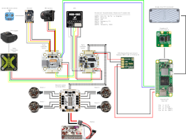
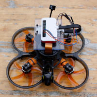
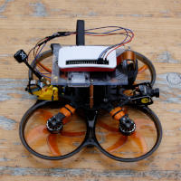
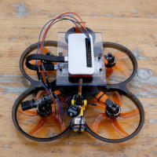
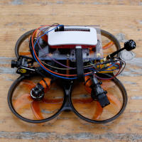
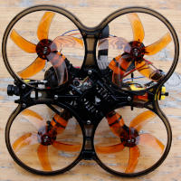
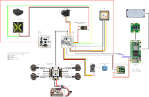
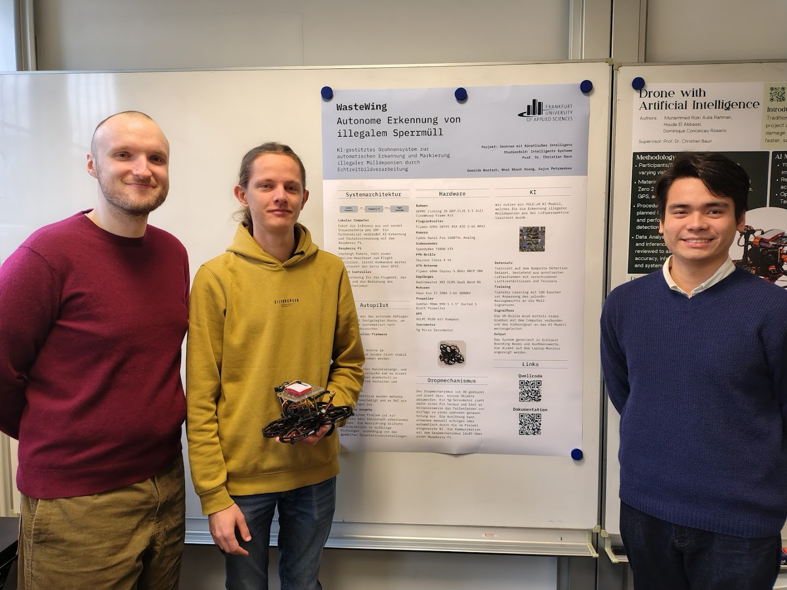 |
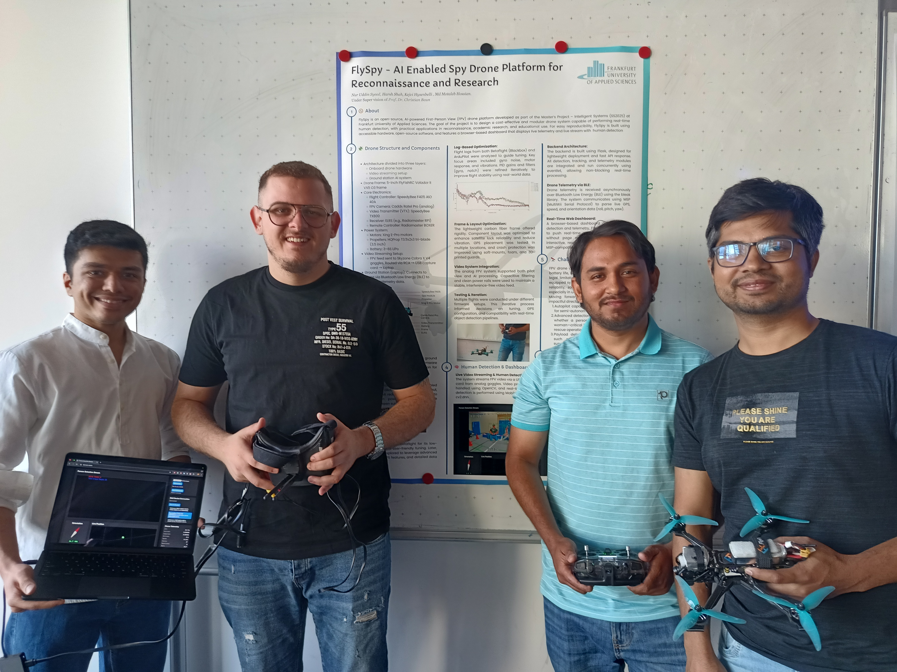 |
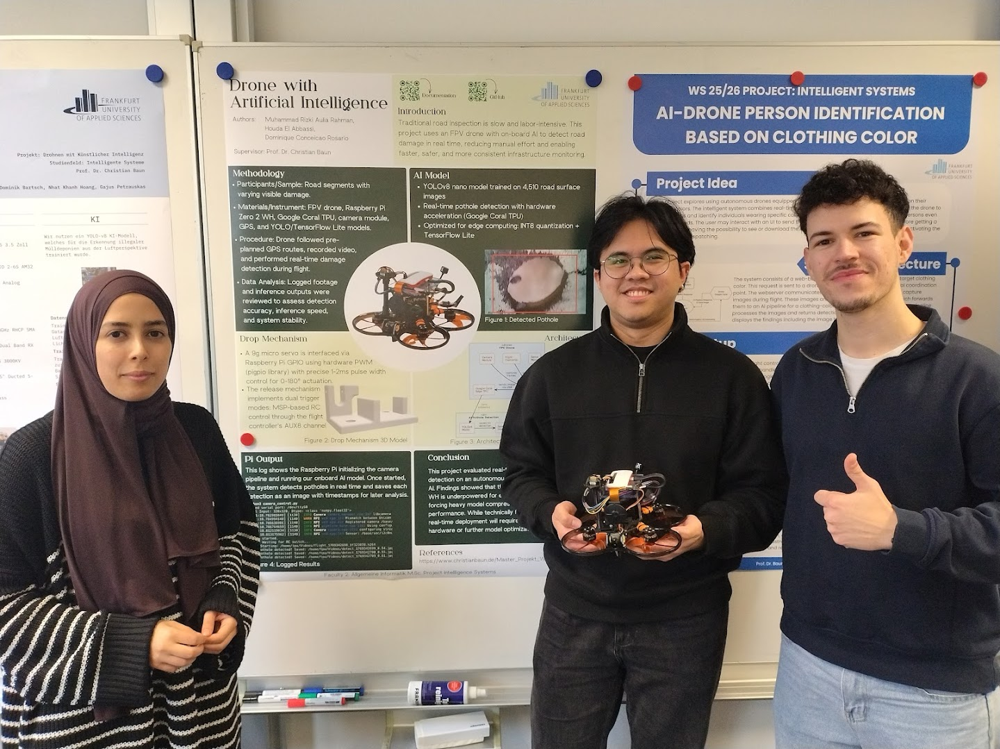 |
You can best reach me via email: christianbaun@fb2.fra-uas.de
|
Prof. Dr. Christian Baun Frankfurt University of Applied Sciences (1971-2014: Fachhochschule Frankfurt am Main) Faculty 2: Computer Science and Engineering Last updated: January 26th 2026 |